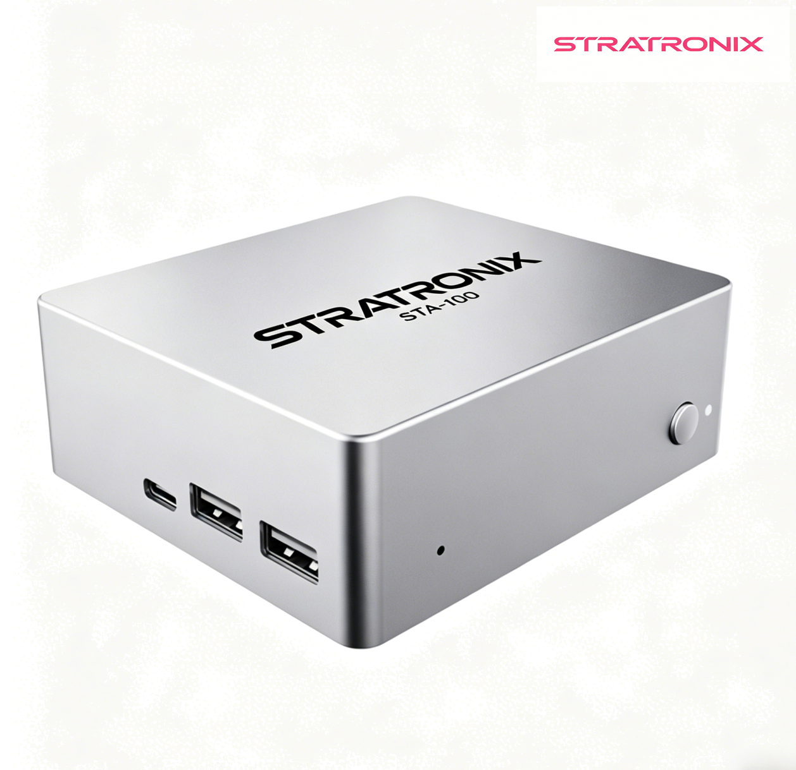

Dispositivo Privado de IA Agente · $499 USD · Envío Mundial

Allwinner A527 Octa-Core
ARM Cortex-A55 con NPU para inferencia IA
4GB LPDDR4
Memoria de baja potencia para operación 24/7
32GB eMMC
Expandible a 512GB vía tarjeta
Wi-Fi + Gigabit Ethernet
Bluetooth 5.0, USB 3.0, HDMI
Linux + XFCE + OpenClaw
Sistema operativo abierto y transparente
Llama 3.1 + Mistral + Qwen 2.5
Tres modelos 7B listos para usar
Todo lo que necesita saber sobre el STRATRONIX STA-100 PAA
El STA-100 está diseñado específicamente como Dispositivo Privado de IA Agente (PAA): preinstalado con OpenClaw AI runtime, optimizado para inferencia LLM en dispositivo (Llama 3, Mistral, Qwen 2.5), y gestionado como dispositivo (no como un computador general). A diferencia de un Mini PC que debe configurar desde cero, el STA-100 se envía funcionando de fábrica con el stack de agente IA preconfigurado.
No. Toda la inferencia de IA se ejecuta localmente usando LLMs en dispositivo. El STA-100 está diseñado para operación siempre activa y online cuando desea actualizaciones, monitoreo remoto o suplementación de IA desde la nube — pero no requiere acceso a internet para ejecutar agentes de IA sobre sus datos.
El STA-100 se envía con tres modelos open-weight precargados: Llama 3.1 8B (propósito general), Mistral 7B (seguimiento de instrucciones), y Qwen 2.5 7B (multilingüe incluyendo español). Puede descargar modelos adicionales vía la interfaz de gestión.
Cada STA-100 incluye una garantía limitada de 2 años cubriendo defectos de hardware, fallos de fabricación y problemas de software preinstalado. Garantía extendida (3 años y 5 años) está disponible en el punto de venta.
Sí. El STA-100 soporta fine-tuning de modelos open-weight (LoRA / QLoRA / fine-tuning completo). Los datos usados para fine-tuning nunca salen de sus instalaciones.
Un STA-100 es una compra única de hardware de $499 USD. Las suscripciones de IA en la nube cuestan $20-30/usuario/mes. Para un equipo de 10+ usuarios, el STA-100 se paga solo en menos de 4 meses. Lea nuestro análisis detallado en la Guía del Comprador: IA Privada vs IA en la Nube.